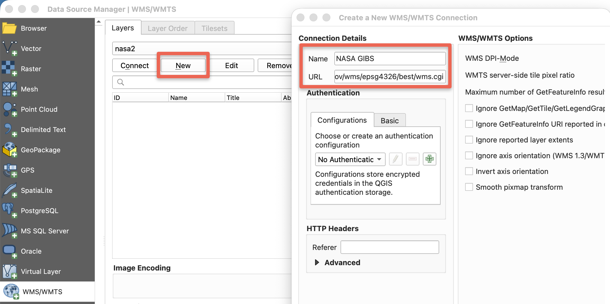
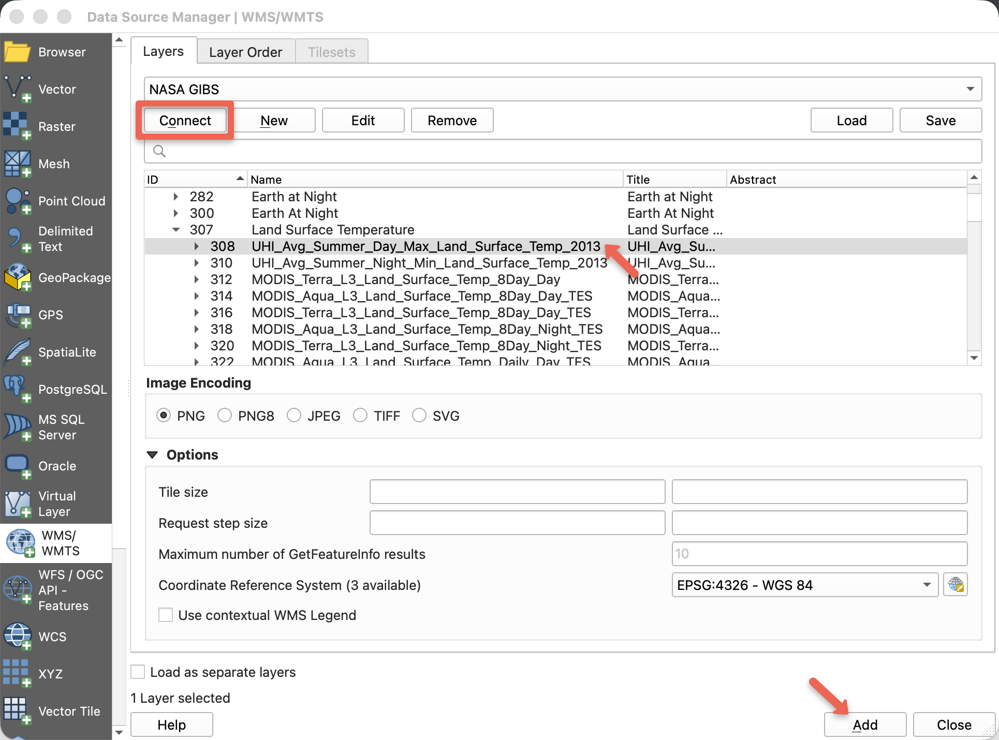

Lab 4. Layers Control
Due: 11:59 pm, Wednesday, 10/7
Overview
This lab will introduce Leaflet layers control to allow users to easily switch between different layers on your map. Scroll down to the bottom for an example.
Please read the instructions carefully (including the explanations of each step) and complete the assignment in the Deliverables section.
Add Basemap (Full Screen Mode)
So far, we have been defining the height of the basemap. There is actually a way to make it "fullscreen" (the height of the map area will adjust according to the browser's window size, as apposed to using a fixed height). So let's do this!
- Before start, create a new file folder (e.g., lab4) for saving the html document and associated data file(s).
- Open your code editor and insert the following lines of code.
Important: Notice that we are not defining the height of thedivin thebodysection just yet, so the map will not display at this stage. We will add more elements shortly to make the map appear.
<!DOCTYPE html> <html> <head> <title>Lab 4</title> <link rel="stylesheet" href="https://unpkg.com/leaflet@1.9.4/dist/leaflet.css" integrity="sha256-p4NxAoJBhIIN+hmNHrzRCf9tD/miZyoHS5obTRR9BMY=" crossorigin=""/> <script src="https://unpkg.com/leaflet@1.9.4/dist/leaflet.js" integrity="sha256-20nQCchB9co0qIjJZRGuk2/Z9VM+kNiyxNV1lvTlZBo=" crossorigin=""></script> </head> <body> <div id="map"></div> <script type="text/javascript"> var map = L.map('map', { center: [51.48,-0.07], zoom: 10 }); L.tileLayer('https://server.arcgisonline.com/ArcGIS/rest/services/Canvas/World_Light_Gray_Base/MapServer/tile/{z}/{y}/{x}', { attribution: 'Tiles © Esri — Esri, DeLorme, NAVTEQ', maxZoom: 11, minZoom: 5 }).addTo(map); </script> </body> </html> - Next, in the
headsection of your HTML, add the following lines of code to define the container's style, which will make the map display in fullscreen.In this step, we defined the height and margins of the webpage and the div container (<style type="text/css"> html, body { margin: 0; padding: 0; height: 100%; } #map { min-height: 100%; } </style>#map, which is the ID for the map container). This setup is essential for creating fullscreen mode.
Feel free to ask if you need clarification. - Once you have done, save the file as
map4.htmlin your lab 4 folder. I will again map London as an example. Before moving on, double-check that the fullscreen mode is working correctly.
Add More Layers
In Leaflet, there are TWO types of layers which allow different types of controls:
(1) base layers that are mutually exclusive (only one can be visible on your map at a time), e.g. tile layers (you could only switch between base layers)
(2) overlay layers, which are all the other layers, e.g., geojson, you put over the base layers (you may turn on or off overlay layers, but multiple overlay layers can be visible at the same time.)
As an example, I will use two base layers (a light gray canvas and a satellite imagery) to switch between, and two overlay layers to turn on and off: a geojson layer and a web map service (WMS) layer. For the deliverables, you will do the same.
- We already have the Esri light gray canvas as the basemap. So we will need another tile layer. However, it is a little more than just adding another L.tileLayer to make the layers control work. We need to create two variables for the two tile layers so that we could refer to them later.
MODIFY the tile layer portion to:var canvas = L.tileLayer('https://server.arcgisonline.com/ArcGIS/rest/services/Canvas/World_Light_Gray_Base/MapServer/tile/{z}/{y}/{x}', { attribution: 'Tiles © Esri — Esri, DeLorme, NAVTEQ', maxZoom: 11, minZoom: 5 }).addTo(map); var imagery = L.tileLayer('https://server.arcgisonline.com/ArcGIS/rest/services/World_Imagery/MapServer/tile/{z}/{y}/{x}', { attribution: 'Tiles © Esri — Source: Esri, i-cubed, USDA, USGS, AEX, GeoEye, Getmapping, Aerogrid, IGN, IGP, UPR-EGP, and the GIS User Community' });-
For the light gray canvas layer, we basically assigned the tile layer to a variable called
canvas. You are free to name the variable anything else as long as it is unique. Just make sure to refer to the exact variable name later. Read more about JS variables. - And we created another tile layer using the ESRI world imagery and assigned it to a variable called
imagery. - You do not need to add both tile layers to the map, as only the most recently added layer will be visible. In this case, we ONLY used the
addTo(map)method for thecanvaslayer to set it as the default base map. As a result, you should still see the Esri Light Gray basemap displayed in the browser.
-
For the light gray canvas layer, we basically assigned the tile layer to a variable called
- Next, I will add the geojson layer (following the tile layers) from lab 3 (london boroughs data.js). However, we will also need to assign the layer to a variable to be used later:
var boroughs = L.geoJson(data, {style:style}).addTo(map); - Save the
data.jsfile into your lab 4 folder, and add this line to theheadsection so the page can read it:<script type="text/javascript" src="data.js"></script> - Next, we need the
getColorandstylefunctions to symbolize the map in graduated colors. This is the same pattern we used in Lab 3. It is repeated here so that you do not have to go back and hunt for it. Place these BEFORE the geojson line above.function getColor(value) { return value > 139 ? '#54278f': value > 87 ? '#756bb1': value > 53 ? '#9e9ac8': value > 32 ? '#cbc9e2': '#f2f0f7'; } function style(feature){ return { fillColor: getColor(feature.properties.pop_den), // pop_den is the field name for the population density data weight: 2, opacity: 1, color: 'gray', fillOpacity: 0.9 }; }- If you are using your own data, change
pop_dento your field name, and change the five break values and colors to match your map. - If you are using the London boroughs
data.js, you may leave this exactly as it is.
- If you are using your own data, change
- Adding the legend works the same way it did in Lab 3, and it is also repeated here. First, add this style block to the
headsection to control how the legend looks:Then place the following AFTER the geojson layer:<style> /* Optional: adjust the values below to change the appearance of the legend */ .legend { padding: 6px 8px; line-height: 18px; background: rgba(255,255,255,0.9); box-shadow: 0 0 15px rgba(0,0,0,0.2); border-radius: 5px; } /* Optional: adjust the values below to change the appearance of the legend color boxes */ .legend i { width: 18px; height: 18px; float: left; margin-right: 8px; opacity: 0.7; } </style>var legend = L.control({position: 'bottomright'}); // Try the other three corners if you like. legend.onAdd = function (map) { var div = L.DomUtil.create('div', 'legend'), grades = [0, 32, 53, 87, 139]; // The break values that define the intervals, note we begin from 0 here div.innerHTML = '<b>Population Density <br> 2011 <br></b>'; // The legend title, written in HTML // Loop through the classes and generate a label with a color box for each interval. // If you are creating a choropleth map, you DO NOT need to change the lines below. for (var i = 0; i < grades.length; i++) { div.innerHTML += '<i style="background:' + getColor(grades[i] + 1) + '"></i>' + grades[i] + (grades[i + 1] ? '–' + grades[i + 1] + '<br>' : '+'); } return div; }; legend.addTo(map);- The
gradesarray holds the same break values you used ingetColor. If you changed the breaks above, change them here too, or the legend will not match the map. - Change the legend title in the
div.innerHTMLline to describe your own data.
- The
- This is what I have so far (sample code): Please do not hesitate to ASK if you need any help here.
- For your deliverable, you will need a second overlay layer. Instead of another geojson file, we will add a layer from a web map service (WMS). The next section explains what that is and how to find one.
Add a WMS Layer
Every layer we have added so far has been one of two things: a tile layer, which is a set of map images that were drawn ahead of time, or a geojson file, which you downloaded and saved into your own folder.
A WMS (Web Map Service) is a third kind. The server draws the map image at the moment you ask for it, for the area and the size you request. You do not download any data. You do not store any file. You send a request, and the server sends back a picture.
This matters because many government and research agencies publish their raster data this way and in no other way. If you want that data on your map, WMS is how you reach it. In this section we will add a layer from NASA. The same steps work for any other agency service, such as the USGS National Map.
- Step 1. Find the endpoint. The endpoint is the base web address of the service. NASA lists theirs on the GIS Usage page of the GIBS documentation. There are four, one for each map projection:
The numbers in the urls are EPSG codes, the ID numbers of coordinate systems.
https://gibs.earthdata.nasa.gov/wms/epsg4326/best/wms.cgi https://gibs.earthdata.nasa.gov/wms/epsg3857/best/wms.cgi https://gibs.earthdata.nasa.gov/wms/epsg3413/best/wms.cgi https://gibs.earthdata.nasa.gov/wms/epsg3031/best/wms.cgi4326is WGS 84 geographic latitude and longitude.3857is Web Mercator, which is the projection Leaflet draws in. We will use both, and the reason is explained in the next step. - Step 2. Browse the layers in QGIS. A service does not tell you its layer names from the web address alone. You have to ask it, and QGIS is the easiest way to look.
- Open QGIS. Go to Layer > Add Layer > Add WMS/WMTS Layer, then click New.
- Give the connection a Name such as
NASA GIBS, and paste the epsg4326 endpoint from Step 1 into the URL box. Click OK.
- Back in the previous window, click Connect. You will now see the list of available layers, grouped into categories such as Land Surface Reflectance and Land Cover.

- Select a layer that interests you and click Add. Confirm that it actually draws on the QGIS map. If a layer looks empty, it may have no data for today's date. Choose a different one.
- Write down the exact layer name (I first right-click and select Rename Layer and then copy the layer name). This is the one piece of information you need. It is case sensitive, and a single wrong character will produce a blank map later.
- Why the 4326 endpoint? NASA's documentation explains this. The 3857 endpoint returns the same layers as one flat list of more than a thousand entries, which is very hard to read. The 4326 endpoint returns them grouped by category. We browse with 4326 because it is easier to read.
- Step 3. Change the endpoint to 3857. When you move to Leaflet, change
epsg4326toepsg3857in the web address. Everything else stays the same.
This is a one character change, and it is worth understanding. You browsed in geographic coordinates because the list was easier to read. You request in Web Mercator because that is the projection your Leaflet map uses. Asking a service for the wrong projection is one of the most common reasons a web map layer does not line up. - Step 4. Add the layer to your map. Place the following AFTER your geojson layer. Replace
PASTE_LAYER_NAME_HEREwith the layer name you wrote down in Step 2.var nasa = L.tileLayer.wms('https://gibs.earthdata.nasa.gov/wms/epsg3857/best/wms.cgi?', { layers: 'PASTE_LAYER_NAME_HERE', format: 'image/png', transparent: true, opacity: 0.6, attribution: 'Imagery courtesy of NASA EOSDIS GIBS' }).addTo(map);L.tileLayer.wmsis the same kind of thing asL.tileLayer, with a few extra options. Notice that we assigned it to a variable,nasa, exactly as we did for the other layers.layersis the layer name from Step 2. This is the option students most often get wrong.transparent: truetells the server to leave the empty areas see through, so your other layers remain visible underneath. Try changing it tofalseto see the difference.opacitycontrols how strongly the layer shows, as a value between 0 and 1.
- If the layer does not appear, check these four things in order:
- Is the layer name spelled exactly as it appeared in QGIS, including capital letters and underscores?
- Does the address end with a question mark, as shown above?
- Did the layer have data for the current date when you checked it in QGIS?
Many NASA layers change from day to day. If you want a specific date, add atimeoption inside the same set of curly braces:time: '2026-09-01' - NASA's GIBS service does not support adding a legend, so we can skip it here.
Layers Control
Once the layers are added, we could set up the control in Leaflet easily.
- We will create two objects: one contains the base layers and one contains the overlays. I used
basemapsandoverlaymapsas the object names. You may use different names for the objects. Place the following lines AFTER adding the WMS layer.A closer look at the syntax here: these are just simple objects with key/value pairs. The key (e.g.var basemaps = { "Light Gray Canvas": canvas, "Satellite Imagery": imagery }; var overlaymaps = { "London Boroughs": boroughs, "NASA Imagery": nasa };"Light Gray Canvas") sets the display name for the layer in the map control, while the corresponding value (e.g.canvas) is a reference to the layer by variable name.
You may style the keys/display names using HTML, e.g., change the color, font, etc. - Now, let's create a Leaflet Layers Control and add it to the map (following the basemaps and overlay maps):
Note the
L.control.layers(basemaps, overlaymaps).addTo(map);L.control.layersfunction takes the first object as the base layers and the second object as the overlays. You will have to follow this order even if you use different object names.
You will find the control button at the upper-right corner of the map area, which will allow you to switch between the basemaps, and turn on/off the overlays: (sample code)
Final Tweak
The layers control worked fine so far. But did you notice something about the legend? The legend stays there even when we turn off the layer. Next, we will add a few more lines of code to control the legend so that it goes with the geojson layer.
- We use two functions here, one for removing the legend when the layer is removed and one for adding the legend when the layer is added. Place the lines AFTER the layer control.
// Removing the legend when the layer is removed map.on('overlayremove', function(eventLayer){ if (eventLayer.name == 'London Boroughs'){ // We use the key/display name to refer to the layer map.removeControl(legend); // legend is the variable name of the layer legend } }); // Adding the legend when the layer is added map.on('overlayadd', function(eventLayer){ if (eventLayer.name == 'London Boroughs'){ legend.addTo(map); } }); - Please read the comments for explanations, which will help you modify the code for your own map.
- The final version!! (sample code)
Deliverables
- Create a layer control with TWO basemaps and TWO overlay layers, as described below.
- TWO basemaps, DIFFERENT from the ones I used in the example above (6 pts). You may use any tile layers you like.
- ONE geojson overlay showing a choropleth map (7 pts). You may reuse your lab 3 data, or use the London boroughs data.js from the example above. Either choice receives full credit.
- ONE WMS overlay (6 pts). You may use the same NASA layer shown in the example above, or find a different one by following Steps 1 through 3 in the Add a WMS Layer section. Either choice receives full credit.
- Make sure to control the legend properly (3 pts).
- Add a heading to your map to describe what you are mapping (3 pts).
- Your final map will be graded based on its overall accuracy (should meet all the requirements above) and cartographic layout/design.
- Host your web page via GitHub (Make sure to rename the html file as
index.htmland upload any associated data files to the repository!!!) and submit the url through D2L. - Something Simple and Fun: If you are interested in adding a custom web page title icon, you may simply get your icon image (e.g., from here) and save it to the same folder as the html document.
Then, place the following line in theheadsection (CHANGE the image file name to match yours).<link rel="icon" href="favicon.png" >